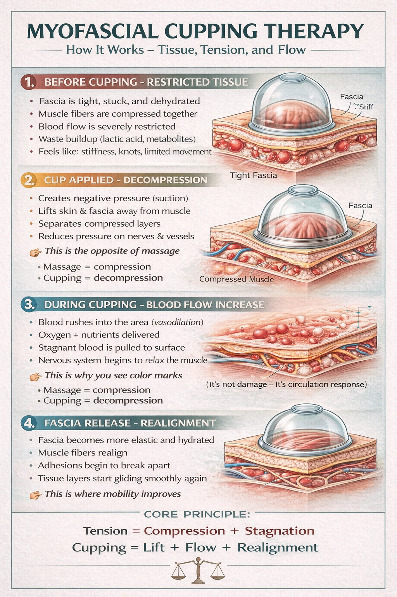
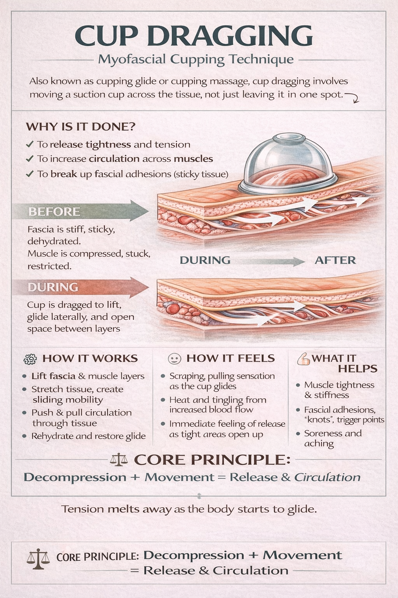
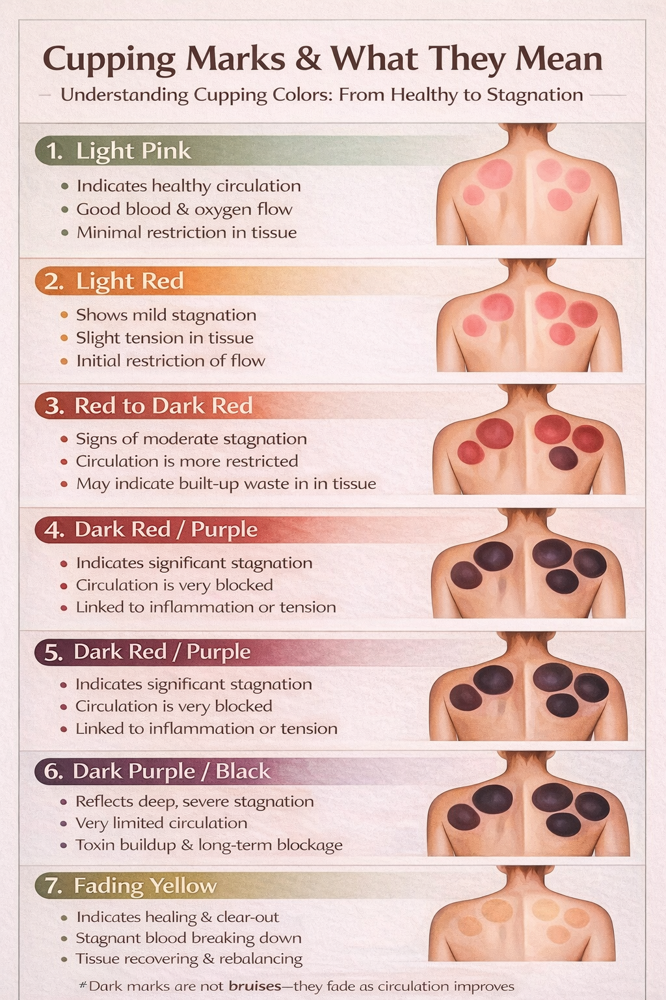

Recovery that supports movement, mobility, and restoration.
Bear’s Den recovery work is built to help clients better understand tension, soft tissue restriction, and how recovery methods can support movement quality. This page is educational and gives a simple overview of recovery concepts including myofascial cupping, cup dragging, and what post-session cupping marks may indicate.
Recovery Focus
- Mobility-minded recovery approach
- One-on-one instruction and guidance
- Educational explanations clients can understand
How myofascial cupping works
Myofascial cupping uses decompression rather than compression. The idea is to lift tissue, create space between layers, and encourage local circulation. Many clients describe it as the opposite sensation of deep pressure massage.
- Tight or restricted tissue may feel stiff, stuck, and less mobile
- The cup creates suction and lifts skin and fascia away from deeper layers
- Local blood flow increases and some areas may temporarily mark or discolor
- The goal is better glide, better tissue movement, and improved comfort

Cup dragging

Cup dragging, also called a cupping glide, involves moving the suction cup across tissue rather than leaving it in one place. This can help support circulation across a wider area and may help relieve the feeling of stiffness or adhesions.
- Lifts fascia and muscle layers
- Supports sliding mobility through tissue
- May create a pulling or scraping sensation while the cup glides
- Often followed by a feeling of release in tight areas
Cupping marks and what they may mean
Cupping marks are not automatically a sign of damage. They are often a circulation response. Different shades may suggest different levels of stagnation, restriction, or recovery. These are broad educational interpretations rather than exact diagnoses.
Light pink / light red
Often associated with healthy circulation or mild restriction.
Red to dark red
May suggest more noticeable stagnation, tension, or restricted flow.
Dark purple / fading yellow
Darker marks can reflect deeper stagnation; fading yellow often signals recovery and clear-out.

What recovery work can help with
Muscle tightness
Support for stiffness, heaviness, and tension that may limit comfortable movement.
Mobility support
Helps clients improve how tissue glides and how joints and muscles move together.
Post-training recovery
Useful for clients who want recovery work alongside structured strength and movement coaching.
Interested in recovery work?
If you want to learn more about recovery services, cupping, or whether recovery work is appropriate for your goals, call or email to ask questions and discuss availability.